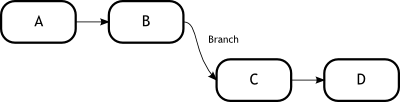
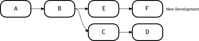
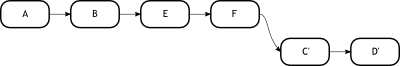

Week 7Day 2 - "Now let's work together"
Pure collaboration
We are now armed with a much clearer idea of how Git works and indeed we are now in a position to actually implement the developmental model that the team of Tamagoyaki need in order to collaborate on their projects.
It should be noted that although we have reached the point of being able to work together on a project, this is not where out discussions about Git will end.
We still have a number of topics to cover and these will be visited as required during the subsequent implementation of Git at Tamagoyaki.
In the trenches...
"So I still maintain that we follow the original plan," said Rob.
"Each person has their own repository and is the master of their own commits"
John shook his head.
"On a small scale," he began,
"that might work."
He paused for a breath.
"But we need to think about scalability too. Whilst I don't think all development work should be in one repository, I also don't think the best way to go is to have a repo for every person."
"I know it's a rarity, but I gotta agree with John." Klaus spoke whilst idly stabbing his pen lightly into a blob of what looked like modelling clay.
"Think what the chimp would say to it too."
Martha furrowed her brow,
"The chimp?" she asked.
John turned to look at Martha and almost regretted having to inform her of yet another of Klaus' pet names.
"That's what Klaus calls Jimmy in IT."
Martha looked a little horrified,
"Klaus, that's an awful thing to say."
"What? He spends all day monkeying around in the 'datacenter'. I've never really seen him do any real work at all."
Klaus was looking at Martha who now had one eyebrow raised.
He had used air quotes when voicing the word 'datacenter'.
"Plus he calls it a datacenter, but I've seen inside, it's more like a cupboard with a PC in it."
"You need to show a little more respect Klaus," Martha threw back, a little more aggressively than she had intended.
"Guys!! Guys!!" John shouted.
"Can we get back to the topic at hand and deal with Klaus later?"
The room fell silent for a while, until the comments had transitioned from immediate to short term memory.
"How about doing it by team?"
It was Eugene speaking now.
"You know, kinda like a Mob repository. Each team will have their own repository and the branches inside will belong to the different team members and be named accordingly so. Then we would have a company repository which would hold the projects and would have dev, qa and released branches."
"You know that's not a bad idea Eugene." Klaus said, trying to redeem himself.
"You da man. How about a hi-five."
The idea of having a Mob repository is not anything new.
Many people decide to split up their teams in this way especially within a company.
For larger repositories it makes a lot of sense as not only does it help to keep development altogether in one place, but it also saves on space and administration overhead.
Managing many smaller repositories is often a lot more time consuming than managing several larger ones.
However you should always look at the situation and the scenario carefully to see which is going to suit you best.
For Tamagoyaki, there is the prospect of the teams growing soon and so they require a way to get the data organised fairly quickly and effortlessly.
Having many small repositories would likely confuse new members to the team, so the decision to move forward with team based and site based repositories makes sense.
Tamagoyaki are proposing to have a single repository which will be the blessed repository we discussed way back at the beginning of the book.
This repository will likely hold three branches.
These will relate to development, quality assurance and releases.
To this end it will allow one team to gain access to features that the other teams are working on, via the development branch.
It will allow a QA manager to work on the quality assurance branch and finally, it will allow someone to push these changes through to the released branch.
The idea is that all development work stays in the development branch.
For Tamagoyaki Inc.
this branch will likely contain mostly finished, but largely untested works.
The teams will work together inside their mob repositories to create new functionality.
Once they are happy, their team leader will push their changes up into the development branch on the blessed repository.
This branch is not guaranteed to be stable.
Sometimes things will break but the development branch is a place that all of the work of the various teams comes together.
Once the teams hit feature freeze, the point at which they will no longer take any more new features into the code base, they will ask the QA manager to create a qa branch.
Bug fixes for current issues will be committed here and when all bugs have been fixed and the code is ready to be released, the release branch will be synced with a specific commit of the qa branch.
If this all sounds a little confusing, we will take a few minutes to digest what we have come up with and draw a few diagrams.
The beauty of Git is that it is so configurable and so by design supports almost limitless workflows.
Unfortunately this can also be a drawback because no two Git setups are generally alike.
The set up of Git is totally customised to the situation or scenario at hand.
In our case, we have merged together two of the workflow models that we presented in the early chapters.
We are using a blessed repository with which to store our crown jewels.
This is the repository that contains our main release branch.
This branch will always contain reliable stable releases.
Sure, it may contain history of how we reached the stable release, but on a checkout, it will be a solid, buildable, pristine, tagged release.
This repository also contains our qa branch.
This is the branch that upon checkout would contain a fairly polished version of the product, but it may still have a few bugs and issues.
Then we have our development branch.
This is where the integration managers from the various teams would pull the code from their teams into a single code base, ready for the QA manager to begin his testing.
This setup may not work for you.
You may require more levels, you may require less.
The fact of the matter is that Git allows you to make that distinction.
For the developers, we have the team mob repositories.
These repositories will contain multiple branches that the various team members will push to, so that the integration managers are able to pull those changes into the dev branch on the blessed repository.
One item we have not yet touched upon is how to bring changes in from one branch to another.
We have one method which we met earlier, called Merging.
However there are other options open to us, such as patching and rebasing.
Why are they important you might ask? Sometimes merging is not the best way to approach the situation.
In the trenches...
John was beginning to get a little frustrated now.
Some members of the team were clearly not understanding what he was saying and he was fighting hard not to raise his voice.
"It is just messy for me to review is all I am saying. I would much prefer not to have to see all those merge commits in the history when you are developing a simple feature."
"We could always look at using a rebase." Martha seemed anxious to calm John down.
"I haven't really played with it enough yet, but rebase could be what we are looking for."
"What does rebase do when it's at home." Sneered Klaus, rolling his eyes.
Martha picked up the red board pen from the board room table and gingerly took off the lid.
She walked over to the whiteboard.
"For small topics or features," she began,
"where you are not going to have to publish it or you need to take a long time developing, it would make sense to use rebase."
She began drawing little diagrams with circles on the board.
"Rebasing will allow you to take your branch, pick up all the development you have done, update the branch underneath to bring it in-line with your blessed dev branch for example, and then replay your development on top."
"Won't that change your history? Isn't that a big big no no?"
"Yes it will change your history, and that's why for some things it isn't appropriate. But it may be just the ticket for what we are trying to do."
John smiled.
He was beginning to feel like the team members were starting to embrace Git's potential.
As you know, each time you merge you create a merge commit.
Whilst this is not a problem, it can leave the tree looking messy.
If you are working on a small feature in a branch, and you want to get the latest features and updates from the dev branch, but you do not want the hassle and untidiness of generating a ton of merge commits.
The best way to get round this is to use the rebase tool.
As mentioned, the rebase tool can find a common ancestor between two branches, pick up the new commits on your new branch, update the branch underneath and the replay your commits on top.
Figure 2, shows a fairly standard commit tree.
We have made commits A and B, and then we branch off and create C and D.
It could well be that the master branch containing A and B actually came from an external source, and we are looking to do some development in our own branch locally.
|  |
|
Figure 2
Standard commit tree example |
|
Now what will inevitably happen is that some more development will continue in the source project, which is represented in the Figure below by commits E and F.
This is shown below in Figure 3.
In our use case, we actually want these new changes to be present during our development.
Let us see how we can handle this.
|  |
|
Figure 3
Continued development |
|
We could quite happily merge the master branch into our own, but that would result in a merge commit being added, plus the fact that as we go further down the line, our development work would be interlaced with various updates from the master.
A better way to handle this sometimes, is by using the rebase tool which will achieve the results displayed below in Figure 4.
|  |
|
Figure 4
A rebase in action |
|
As you can see we have a slight alteration to the diagram.
Commits C and D have little ticks next to them.
This is to indicate that they are actually not the same commits as before.
You may be wondering why? Think about it for a few minutes.
In Git, every commits SHA-1 hash is based not only on the contents of that commit, but also on the parent.
In this way, if we move these commits, then their SHA-1 hashes are going to change.
Our notation is simply stating that although the contents of these commits is the same, they are the C and D that we remember, their identifier will change.
Remember our discussion about changing the past? This is very relevant here.
Rebasing is the ultimate way to change the past.
Over the next few days, we are going to demonstrate a number of ways that rebase can aid you in your development and produce a clean and structured commit history.
However, care must be taken not to rebase something which others have already pulled.
Remember, with great power, comes great responsibility.
Let us now turn out attention to actually looking at an example of the rebase tool.
We are going to take our example repository and create a branch.
Then we are going to do some work on the master branch and try rebasing our changes.
|
|